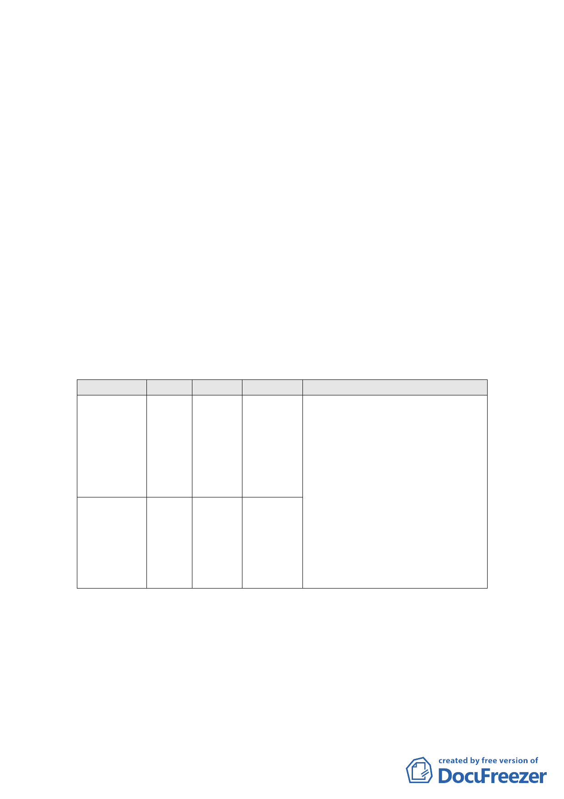

三、計畫緣起：
（一）本變更計畫範圍緊臨市府 89 年 06 月 26 日公告劃定之「中
山區吉林路、民生東路附近更新地區」旁，惟當時劃定案
並未將該二筆停車場用地納入更新地區範圍。另查 97 年 12
月底，吉林段一小段 846 地號毗鄰之街廓已由民間實施者
提送都市更新事業計畫報核在案，惟經臺北市都市更新處
協商後，實施者表示同意納入 846 地號停車場用地，一併
辦理更新。
（二）考量該二筆停車場用地區併入更新地區後對後續經營管
理、土地使用效益及更新單元地區整體環境品質，將有利
於更新單元整體開發，爰依都市計畫法第 27 條第 1 項第 4
款及都市更新條例第 6、8 條提出變更。計畫內容概述如下：
四、變更土地使用分區：
（一）土地使用分區變更：
位置
原計畫 新計畫 面積(㎡)
臺北市中
山 區 吉 林 停 車 第二種
段 一 小 段 場 用 商業區
829 地 號 地 （特）
土地。
116.00
臺北市中山
區吉林段一
小段 846 地
號土地。
停車場
用地
第三種
住宅區
102.00
變更理由
1.納入毗鄰基地之更新地區，採完整
街廓整體開發，促使土地有效利
用，提升生活環境品質。
2.本案範圍原停車需求，為周邊住戶
臨停使用；變更細部計畫納入更新
地區後，更新單元內將可提供自給
自足之停車需求，並透過增設獎勵
車位，滿足周邊街廓之停車需求解
決巷內臨停狀況，提升道路服務品
質。
3.促使更新地區可以完整街廓開發
及適當之規劃，提升防救災品質，
並提供完整之人行道系統。
（二）擴大都市更新地區範圍：
中山區吉林段一小段 829、846 地號土地併入市府 89 年 06
月 26 日公告劃定之「中山區吉林路、民生東路附近更新地
區」，成為一完整街廓之更新地區範圍。
（三）土地使用分區管制：
1.第二種商業區（特）（原屬第三種住宅區）：應依 84 年 9
-2-